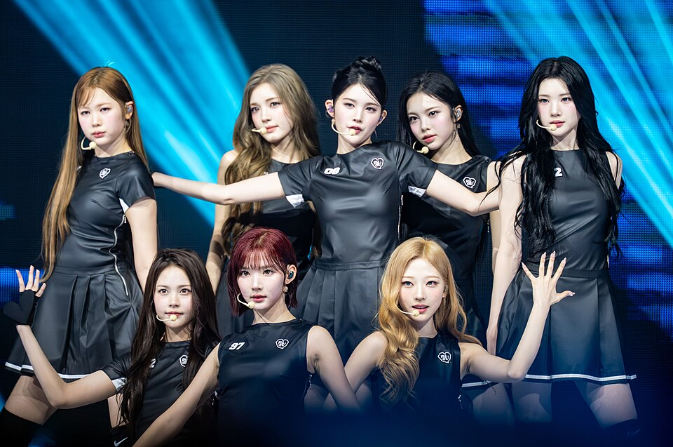

Music &
Favorites
Music
05画像を読み込めませんでした

画像を読み込めませんでした画像を読み込めませんでした
画像を読み込めませんでした
画像を読み込めませんでした
Photo credits
- TWICE — K-POPIT 케이팝잇 / CC BY 4.0
- Hearts2Hearts — sublimitas viii / CC BY-SA 4.0
- Taylor Swift — iHeartRadioCA / CC BY 3.0
- Justin Bieber — Daniel Torok / Public domain
- Dua Lipa — Harald Krichel / CC BY-SA 4.0
Wikimedia Commons。掲載用サムネイル。画像ファイルの加工なし。
Favorites
準備中